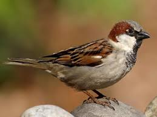
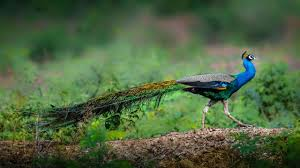

|
The phoenix is an immortal bird that cyclically regenerates or is otherwise born again. While it is part of Greek mythology, it has analogs in many cultures, such as Egyptian and Persian. Associated with the sun, a phoenix obtains new life by rising from the ashes of its predecessor. Some legends say it dies in a show of flames and combustion, while others that it simply dies and decomposes before being born again.[1] In the Motif-Index of Folk-Literature, a tool used by folklorists, the phoenix is classified as motif B32.[2]
|

The house sparrow (Passer domesticus) is a bird of the sparrow family Passeridae, found in most parts of the world. It is a small bird that has a typical length of 16 cm (6.3 in) and a mass of 24–39.5 g (0.85–1.39 oz). Females and young birds are coloured pale brown and grey, and males have brighter black, white, and brown markings. One of about 25 species in the genus Passer, the house sparrow is native to most of Europe, the Mediterranean Basin, and a large part of Asia. Its intentional or accidental introductions to many regions, including parts of Australasia, Africa, and the Americas, make it the most widely distributed wild bird. |
|
Eagles are large, powerfully-built birds of prey, with heavy heads and beaks. Even the smallest eagles, such as the booted eagle (Hieraaetus pennatus), which is comparable in size to a common buzzard (Buteo buteo) or red-tailed hawk (B. jamaicensis), have relatively longer and more evenly broad wings, and more direct, faster flight, despite the reduced size of their aerodynamic feathers. Most eagles are larger than any other raptors, apart from some vultures. The smallest species of eagle is the Great Nicobar serpent eagle (Spilornis klossi), at 450 g (1 lb) and 40 cm (16 in). The largest species are discussed below. Like all birds of prey, eagles have very large hooked beaks for ripping flesh from their prey, strong, muscular legs, and powerful talons. |

Peafowl is a common name for two bird species of the genus Pavo and one species of the closely related genus Afropavo within the tribe Pavonini of the family Phasianidae (the pheasants and their allies). Male peafowl are referred to as peacocks, and female peafowl are referred to as peahens.
The two Asiatic species are the blue or Indian peafowl originally from the Indian subcontinent, and the green peafowl from Southeast Asia. The Congo peafowl, native only to the Congo Basin, is not a true peafowl. Male peafowl are known for their piercing calls and their extravagant plumage. The latter is especially prominent in the Asiatic species, which have an eye-spotted "tail" or "train" of covert feathers, which they display as part of a courtship ritual. |